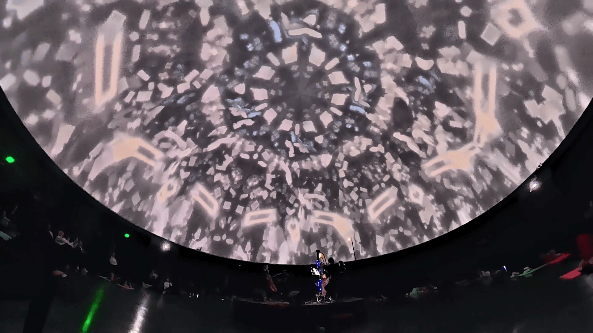

Diseñador con énfasis en Comunicación y Maestro en Arte con énfasis en Medios Electrónicos y Artes del Tiempo de la Universidad de los Andes, con más de 10 años de experiencia en dirección de arte, teatro, cine, animación, educación y ciencia.
En su obra busca explorar la materialidad del píxel y la tecnología para el aprovechamiento de estructuras de datos en la creación de entornos físicos y digitales interactivos. Ha trabajado en diferentes proyectos individuales y colectivos a nivel nacional e internacional desarrollando proyectos artísticos y de diseño interdisciplinares.
Experiencia en gestión de proyectos audiovisuales y desarrollo de pipeline en animación 3D y 2D para la optimización de procesos técnicos y creativos.
Explora cómo el mundo material puede ser traducido en estructuras de datos e interpretado en un entorno digital en el que la información que constantemente producimos puede ser usada para la creación. Le interesan las dinámicas que modifican cómo interactuamos en diversos entornos virtuales y la maleabilidad que permiten las nuevas tecnologías creando nuevas dinámicas y reflexiones sobre la identidad virtual.

Experiencia con fotogrametría 3D para levantamiento de terrenos y espacios arqueológicos.
Experiencia en Maya, 3ds Max, Cinema 4d, blender, substance painter, zbrush, premiere y after effects.
Como también programas en tiempo real como touchdesigner y unreal engine, para producciones audiovisuales, videojuegos, instalaciones interactivas, experiencias inmersivas en domo, VR y Xr. Programación creativa. Software de render como redshift, Vray y Arnold.
- Festival Estereo Picnic 2026 - Diseño visual y visuales en vivo para Zarigueya. Junto con Nicolas Gamba
- Visuales en vivo ASCII sound Experience - Planetario de Bogotá - 2025. Colectivo Ebra. Julian Angarita y Nicolas Gamba.
- Visuales en vivo La cruzada de los niños nómadas - Teatro de Occidente - 2025. Sala Fanny Mikey en el Centro Nacional de la Artes Delia Zapata Olivella
- Gira por Colombia con la Filarmonica Joven de Colombia (INQUEBRANTABLES) 2024 - Colectivo Metanoia - Julián Angarita Bernal, Nicolás Gamba, Sergio Mantilla. Dirección creativa visual y Diseño De iluminación para la Sinfonía no. 2 en mi menor, Op. 27 de Rachmaninov.
- Festival Estereo Picnic 2024 - Diseño visual y diseño de iluminación para Okraa. Sebastian Londoño, Julián Angarita Bernal, Sergio Mantilla.
- IN/CORPO/DATA 2024 - Laboratorista junto a Catalina Alvarado y Danilo García en el laboratorio de construcción de biosensores y exploración creativa de las señales en Plataforma Bogotá.
- Incredible motion machine toolkit 2024 - Instructor junto a Nicolas Varela. Taller de motion graphics en After Effects.
- Carnaval Digital 2022 - Proyecto "Soul Room" - Julián Angarita Bernal, Nicolás Gamba, Mario Carrascal, Andrés Sereno, Jorge Álvarez
- Exposición Artificio 2023 - Fundación Gilberto Alzate Avendaño )FUGA) - Proyecto "Marte" - Julián Angarita Bernal.
- Milano Design Week 2022, Milán, Italia - Proyecto Teatropedia -María Del Sol Peralta, Julián Angarita Bernal, Isabella Londoño Parra, equipo de innovación social y Equipo de comunicaciones del Teatro Mayor Julio Mario Santo Domingo.
- Engage 2022 - RE-ND-ER-ED - 3 piezas audiovisuales (Marte, Azul y anemona) para la exhibición - Experimental immersive art projects embodied both in physical and digital spaces. www.re-nd-er-ed.co.uk
- Loading festival IDAM Miami, USA - Miami Art Week 2021 - QR code Show SCAM ME - 3D Crystals
- EXPOSICIÓN PREMIO UNIANDINO A LAS ARTES - GALERÍA ESPACIO ALTERNO 2020- Proyecto Confinamiento expandido con Nicolás Gamba y Mario Carrascal
- EXPOSICIÓN COLECTIVA OVERWRITE Galería Espacio Alterno 2019 - Curaduría Sergio Mantilla
- EXPOSICIÓN INTANGIBLES - Cinemateca de bogotá Consultoria en tecnologia, programación y seguimiento de obras interactivas - Fundación Telefonica, Idartes y la fundación Arteria.
- FILE FESTIVAL, ELECTRONIC LANGUAGE INTERNATIONAL FESTIVAL. SAO PAULO, BRASIL - LED show 2019 - Glitch Depth Studies con Articular LAB / Sergio Mantilla - Julian Angarita Bernal
- FESTIVAL DANZA EN LA CIUDAD 2018 - Proyecto “Interfaz” - con Colectivo EMA
- LOOP 54 RADIÓNICA 2018 - Mapping Fachada RTVC / Experiencia Audiovisual - con Sergio Mantilla
- EXPOSICIÓN INDIVIDUAL / SALA DE PROYECTOS UNIVERSIDAD DE LOS ANDES 2017 - Proyecto “Hierofanía” - con Paula Andrade
- FESTIVAL ARTTEC 2017 - Proyecto S.C.F con Sergio Mantilla / LIA Laboratorio Interdisciplinar para las Artes
- SALÓN DE ARTE Y TECNOLOGÍA VOLTAJE 2016 - Homúnculos - curaduría BIT
- Salón Séneca Universidad de los Andes 2017 - Proyecto “Que es un Extintor?” con Paula Andrade
- VOLARÁN / SALA DE EXPOSICIONES EDIFICIO JULIO MARIO SANTO DOMINGO 2016 - Proyecto “ASTER”
- ANDANDO / SALA DE EXPOSICIONES EDIFICIO JULIO MARIO SANTO DOMINGO / UNIVERSIDAD DE LOS ANDES 2014 - Proyecto“Entanglement” - con Natalia Ardila Torres y Samuel Sánchez.
- Ganador X Premio Uniandino a las Artes 2020 – proyecto Confinamiento expandido con Nicolas Gamba y Mario Carrascal
- Primer Puesto Premio Salón Séneca Universidad de los Andes 2015 - Proyecto “Qué es un extintor?” con Paula Andrade
- Revista Avenida ed. 13 - 2022 - Un universo Latinoamericano en 3D - https://issuu.com/revistavenida/docs/decimoterceraedicion
- Revista Exclama ed 38 - 2018 - Especial de artistas contemporáneos - proyecto homúnculos 2017- La Fábrica - Proyecto "Entanglement" con Natalia Ardila Torres y Samuel Sánchez / Facultad de Artes y Humanidades 2014
- La Fábrica - Proyecto "Entanglement" con Natalia Ardila Torres y Samuel Sánchez / Facultad de Artes y Humanidades 2014